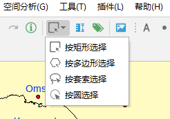
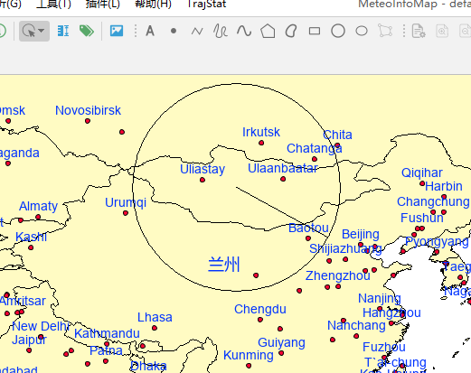
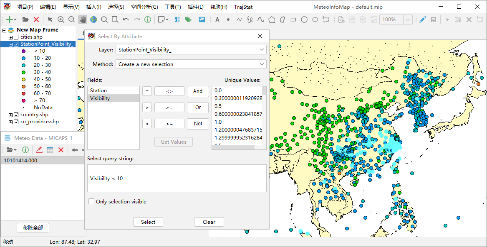
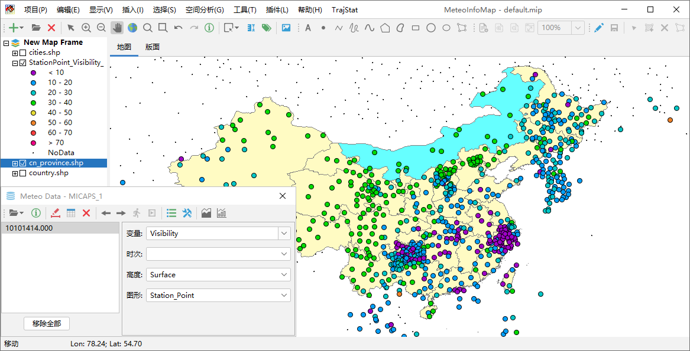
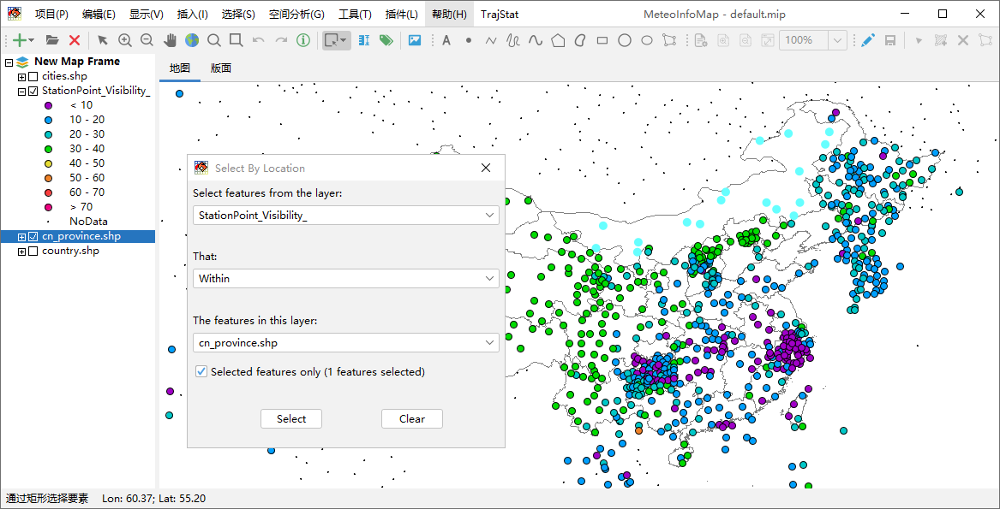

图层空间要素选择¶
软件工具栏中有一些选择工具可以交互式的选择某个矢量图层中的部分空间要素，包括“按矩形选择”、“按多边形选择”、“按套索选择” 和“按圆选择”。选中其中一个（例如按圆选择），用鼠标在地图区域绘制相应的图形选中图形内的空间要素。
 软件还有“选择”菜单，可以根据矢量图层的属性数据来选择空间要素，或者根据空间位置来选择空间要素。点击“选择 -> 通过属性数据选择 ”菜单打开通过属性数据选择空间要素的对话框，设置图层（Layer）为欲进行空间要素选择的图层，设置合适的选择方式（Method），利用 图形的属性字段和数据值编写一个选择表达式。例如选择能见度小于10公里的站点，编写表达式为：Visibility < 10，点击选择按钮 （Select）即可，被选中的空间要素会高亮显示。
下面示例要选择位于内蒙古的站点，用鼠标选中cn_province.shp图层名，点击工具栏中“通过矩形选择要素”按钮，通过鼠标点击选中内蒙 古区域，被选中区域高亮显示。点击“选择 -> 通过位置选择”菜单，打开通过位置选择对话框，设置被选中空间要素的图层 （Select features from the layer）、选择方式（That）、用于确定空间位置的图层（The features in this layer）。 注意要勾选只用被选中要素（Selected features only），这样就可以用刚才cn_province.shp图层中被选中的内蒙古区域来选择能见度 站点图层的站点了。选中后的点会高亮显示。
 